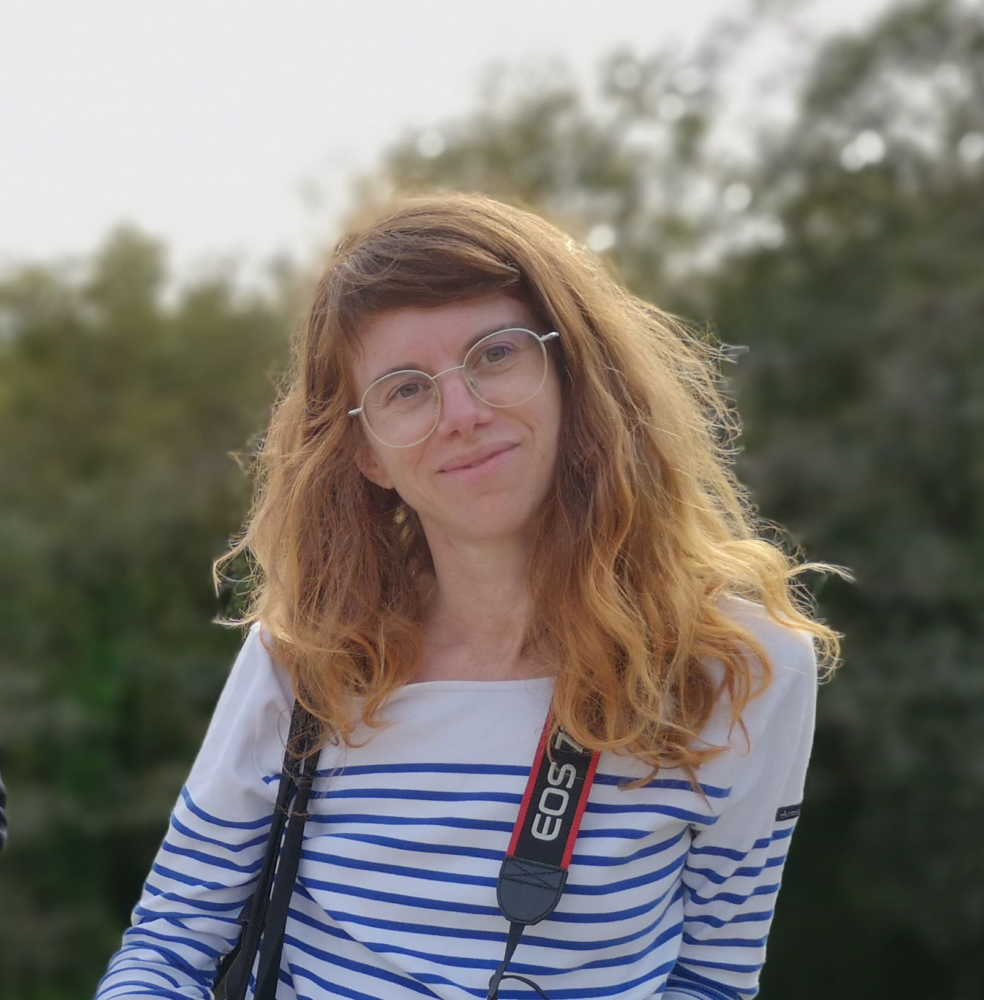
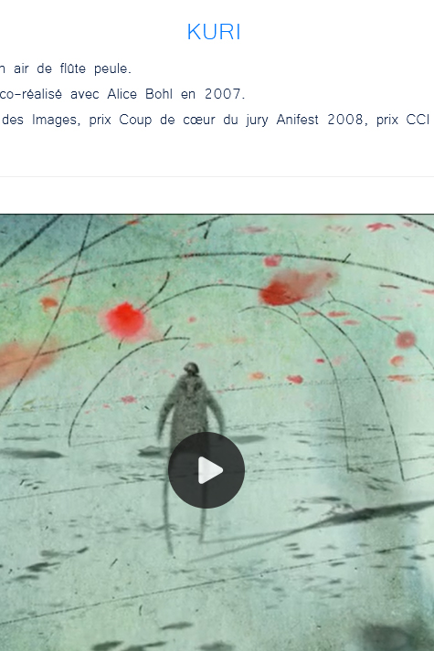
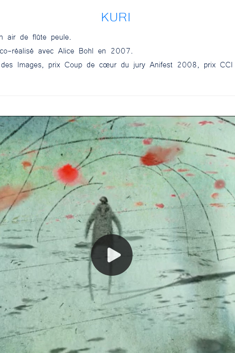

Illustratrice, graveuse, storyboardeuse, animatrice 2D/3D, éditrice, écrivaine et enseignante, Mélanie Prunier explore l’image narrative sous toutes ses formes : animation, bande dessinée, estampes, communication visuelle et théâtre.
Son univers mêle poésie, engagement et expérimentation graphique.
Etudes de graphisme à l'ENSAAMA Olivier de Serres (Paris), et d’animation 2D/3D à l’EMCA (Angoulême).


 
